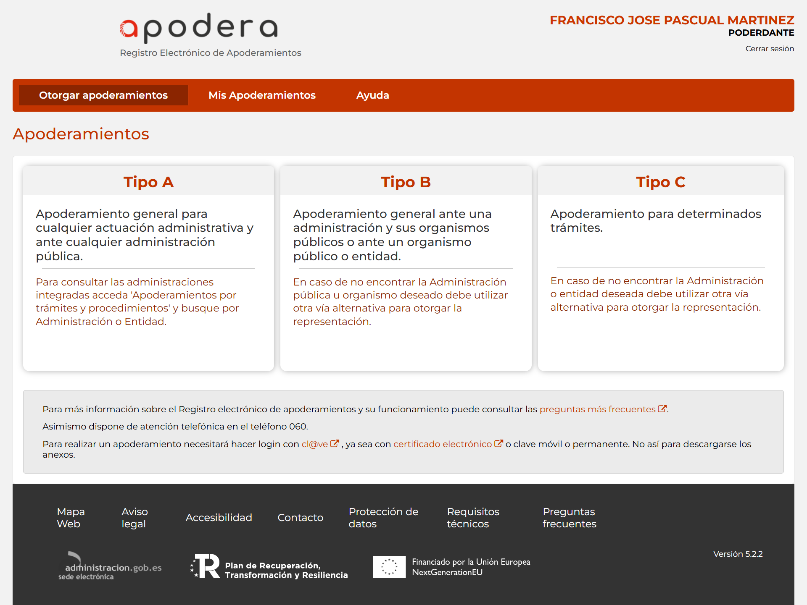

Apodera
Apodera es el Registro Electrónico de Apoderamientos de la Administración General del Estado y permite a los interesados autorizar a personas físicas o jurídicas para actuar en su nombre en las relaciones con las Administraciones Públicas.

El apoderamiento se puede realizar en tres sencillos pasos:
- Seleccionar el tipo de poder que se desea otorgar.
- Rellenar el formulario introduciendo los datos e indicando la vigencia del apoderamiento.
- Firmar el formulario del apoderamiento mediante un certificado digital.
Featured Rest of line (normal style)
Featured Rest of text
Es curioso que diga firmar cuando no hay firma criptográfica
Objetivos
En el Registro de Apoderamientos:
- Aparecer en el tipo B de otorgamiento de apoderamientos.
En la aplicación de backoffice:
- Consulta de los apoderamientos otorgados por la OAMR y por la unidades tramitadoras.
- Inscripción de poderes en presencial en la OAMR.
- Bastanteo de los apoderamientos en Asesoría Jurídica.
Desarrollo
- Adhesión al convenio CRUE-AGE de servicios horizontales para poder utilizar REA.
- Alta en Apodera para poder aparecer en los apoderamientos tipo B.
Tareas pendientes
- Instrucción para limitar al contexto de la Universidad el registro de apoderamientos en presencial ante la OAMR. Para evitar que personas físicas o jurídicas puedan inscribir apoderamientos para otros fines distintos de la Universidad.
- Resolución SG para actualizar el RFH
- Actualizar contenido en la web de la OACU
Acrónimos
- OAMR: Oficina de Asistencia en Materia de Registro
- OACU: Oficina de Atención a la Comunidad Universitaria
- RFH: Registro de Funcionarios Habilitados
- REA: Registro Electrónico de Apoderamientos